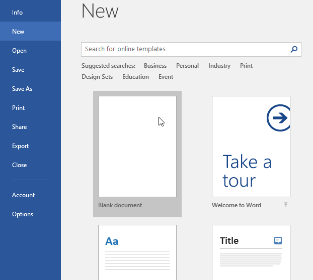
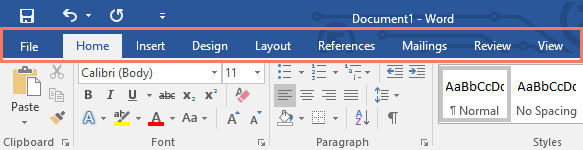
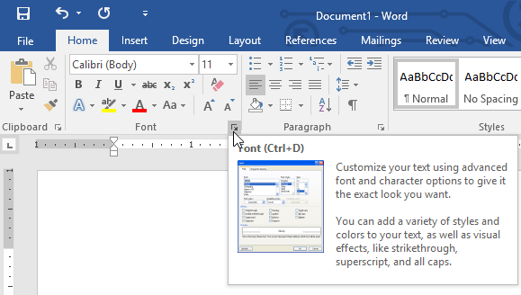
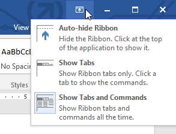
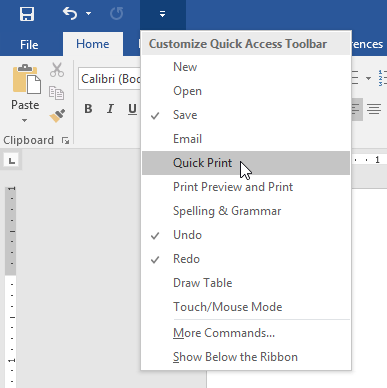
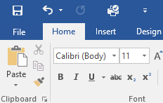
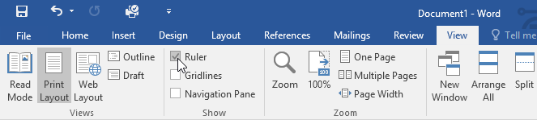
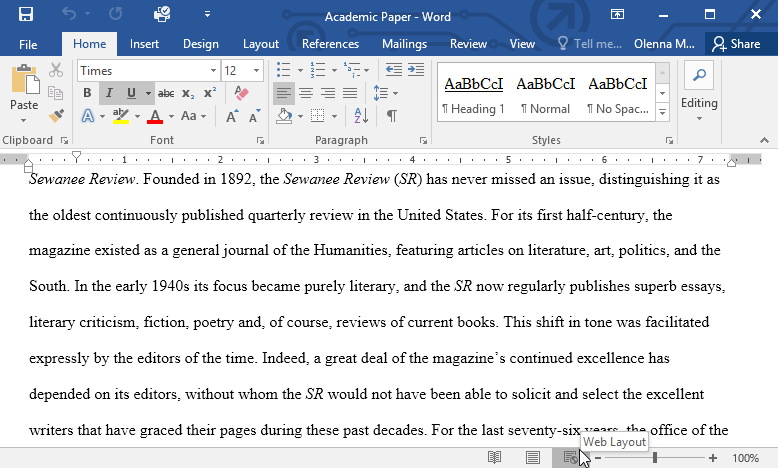
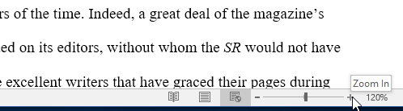

Introducere

Ascundere automată a Ribbon-ului: Ascunderea automată afișează documentul în modul ecran complet și ascunde complet
Ribbon-ul din vedere.
Pentru a afișa Ribbon-ul, faceți clic pe comanda Expand Ribbon din partea de sus a ecranului.
Afișați filele: această opțiune ascunde toate grupurile de comenzi atunci când nu sunt utilizate,
dar filele vor rămâne vizibile. Pentru a afișa Ribbon-ul, faceți clic pe o filă.
Afișare file și comenzi: Această opțiune maximizează Ribbon-ul.
Toate filele și comenzile vor fi vizibile.
Această opțiune este selectată în mod implicit când deschideți Word pentru prima dată.
Utilizarea funcţiei: Spune-mi
 Bara de instrumente cu acces rapid
Bara de instrumente cu acces rapid
 Vizualizarea Documentelor si Zoom-ul
Vizualizarea Documentelor si Zoom-ul
Modul de citire: această vizualizare deschide documentul pe un ecran complet.
Această vizualizare este excelentă pentru a citi cantități mari de text sau pentru a vă revizui pur și simplu munca.

Aspect de Imprimare: Aceasta este vizualizarea implicită a documentului în Word.
Arată cum va arăta documentul pe pagina tipărită.

Aspect Web: această vizualizare afișează documentul ca o pagină web,
ceea ce poate fi util dacă utilizați Word pentru a publica conținut online.
Microsoft Word este o aplicație de procesare a textului care vă permite să creați o varietate de documente, inclusiv scrisori, rezumate și multe altele. În această lecție, veți învăța cum să navigați prin interfața Word și să vă familiarizați cu unele dintre cele mai importante caracteristici ale acesteia, cum ar fi Ribbon, Bara de instrumente Acces rapid și Backstage view.
Interfaţa WordCând deschideți Word pentru prima dată, va apărea ecranul de pornire. De aici, veți putea să creați un document nou, să alegeți un șablon și să vă accesați documentele editate recent. Din ecranul de pornire, găsiți și selectați Document gol pentru a accesa interfața Word.

Ribbon-ulWord folosește un sistem Ribbon cu file în loc de meniurile tradiționale. Ribbon-ul conține mai multe file, pe care le puteți găsi în partea de sus a ferestrei Word.

Fiecare filă conține mai multe grupuri de comenzi înrudite. De exemplu, grupul Font din fila Acasă conține comenzi pentru formatarea textului din documentul dumneavoastră
Unele grupuri au, de asemenea, o mică săgeată în colțul din dreapta jos pe care puteți da clic pentru și mai multe opțiuni.

Afişarea şi ascunderea Ribbon-uluiDacă descoperiți că Ribbon-ul ocupă prea mult spațiu pe ecran, o puteți ascunde. Pentru a face acest lucru, faceți clic pe săgeata Opțiuni de afișare a ribbon-ului din colțul din dreapta sus al Ribbon-ului, apoi selectați opțiunea dorită din meniul derulant:

Dacă întâmpinați probleme în a găsi o comandă dorită, funcția Spuneți-mi vă poate ajuta. Funcționează la fel ca o bară de căutare obișnuită. Introduceți ceea ce căutați și va apărea o listă de opțiuni. Puteți utiliza apoi comanda direct din meniu fără a fi nevoie să o găsiți pe Ribbon.
Bara de instrumente cu acces rapid
Situată chiar deasupra Ribbon-ului, Bara de instrumente Acces rapid vă permite să accesați comenzi comune, indiferent de fila selectată. În mod implicit, arată comenzile Salvare, Anulare și Refacere, dar puteți adăuga alte comenzi în funcție de nevoile dvs.
Pentru a adăuga comenzi la Bara de instrumente cu acces Rapid:- Faceți clic pe săgeata derulantă din dreapta Barei de instrumente Acces rapid.
- Selectați comanda pe care doriți să o adăugați din meniu.
- Comanda va fi adăugată la Bara de instrumente Acces rapid.



Rigla este situată în partea de sus și în stânga documentului. Vă ajută să ajustați documentul cu precizie. Dacă doriți, puteți ascunde rigla pentru a crea mai mult spațiu pe ecran.
Pentru a afişa şi a ascunde Rigla:- Faceți clic pe fila Vizualizare.
- Faceți clic pe caseta de selectare de lângă Rigla pentru a afișa sau a ascunde rigla.


Vizualizarea Backstage vă oferă diverse opțiuni pentru salvarea, deschiderea unui fișier, imprimarea și partajarea documentului. Pentru a accesa vizualizarea Backstage, faceți clic pe fila Fișier din Ribbon.
Vizualizarea Documentelor si Zoom-ul
Word are o varietate de opțiuni de vizualizare care modifică modul în care este afișat documentul. Puteți alege să vizualizați documentul în Modul Citire, Aspect de imprimare sau Aspect Web. Aceste vizualizări pot fi utile pentru diverse sarcini, mai ales dacă intenționați să imprimați documentul. De asemenea, puteți mări și micșora pentru a face documentul mai ușor de citit.
Schimbul vizualizării documentelorComutarea între diferite vizualizări ale documentului este ușoară. Doar localizați și selectați comanda de vizualizare a documentului dorită în colțul din dreapta jos al ferestrei Word.

Marirea şi micşorareaPentru a mări sau micșora, faceți clic și trageți glisorul de control al zoomului din colțul din dreapta jos al ferestrei Word. De asemenea, puteți selecta comenzile + sau - pentru a mări sau micșora cu incremente mai mici. Numărul de lângă glisor afișează procentul actual de zoom, numit și nivelul de zoom.
